～香港...是不是像這裏的城市？～
White House 的早餐竟然是自助餐，我是個抗拒自助餐的人，而且這裏沒有傳統早餐吃，所以就在早餐的時候，決定去完 Kyaiktiyo 之後回來不再住這裏。
執好行李，我行到 Motherland，預訂房間再把大行李寄存好，托職員幫我買巴士票到 Golden Rock 那裏，由這裏乘的士去巴士站的好處是的士錢不會超過平常價，但缺點是沒得乘公車。
巴士站真的很遠，坐的士也用了四十五分鐘，去到那個勁大的巴士站，也不知哪家才有車去 Golden Rock，Motherland 職員幫我在紙寫下目的地的緬甸文，一下車就有很多人走埋來，看看我的紙，帶我到其中一部巴士，巴士十一時才開出，其間一個西方人上車坐在我旁。
他也是去 Kinpun，Kinpun 是 Kyaiktiyo 山下的小鎮，若不是住在山上的超貴酒店，就得在此過夜，否則即日來回一定趕到甩肺。
老外來自捷克共和國，他真的是說全名，我還在想我是否要說我來自 People's Republic of China，但我還是先說我來自香港，不過捷克人竟然問我：香港...是不是像這裏的城市？
簡直是港燦遇上克燦。我好像回答「摩登一點」。
之後是約三小時的車程，中途停一停，我又再吃喜愛的炸蝦餅，但這次是最後一次了，之後都沒吃到。車的總站就在 Kinpun，我還擔心是否需要中途下車，但當看見 Sea Sar 的招牌就放心了，巴士更是正正停在旅館前面。我一下車就走去旅館了，捷克人卻好像要先去看別的旅館。
經過 Sea Sar 的餐廳，到達旅館正門，這旅館全都是 bungalow，很開心，接待我的職員叫 SeTo（？），他先帶我到細小一點的木屋仔，6 美元一夜，其實已經不錯的，只是沒有熱水，我要求看有熱水的，是另一間要 15 美元一夜，不過就大得多，便要了它。
幸好早到，原來只淨這間，SeTo 和我去辦入住手續時，見到捷克人來了，真是好彩早一步，白宮負責人又話唔使訂，真係。
已下午三時多，我即刻執拾好就要上山，SeTo 見我行色匆匆，連忙問我是否要上山，然後向我解釋我不夠時間，因為上山的 truck 要四十五分鐘上去，然後我要再行四十五分鐘的路才到達，另外，最後一班 truck 六時便下山了。
多得他提點，我改為明早才上去。這個下午我就逛 Kinpun，反而這樣更好，小小的 Kinpun 卻很旺，沒什麼外地人，有很多本地人在這裏中途休息，我在街角的一間果汁店吃雪糕球，然後沿著主要的街道一直行，行到我估要上山的地方。
這街道的兩邊有很多紀念品店，又有很多很有趣的店，賣一些好像是藥材的東西，又見到有些巨豆，感覺很神奇。越行近山，店舖越疏落，轉而是一些民居，草棚或木屋。由這裏是可以一直行上山的，不過要大半天的時間。多數人來是由另一邊車路坐 truck 上山。
Kinpun 有很多用水果製成的糖出售，就像我們的糖冬瓜，甜到死的。
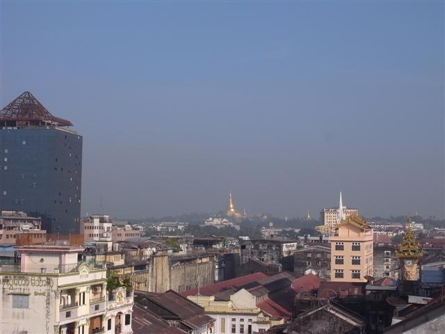
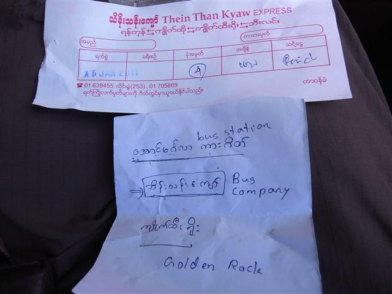
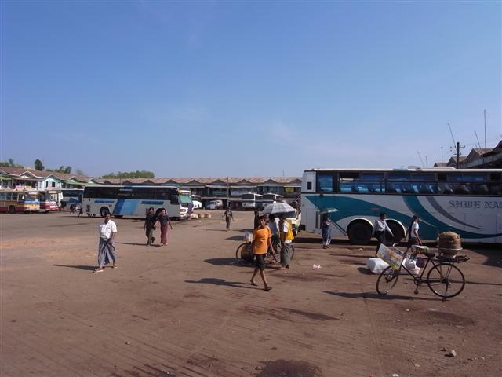
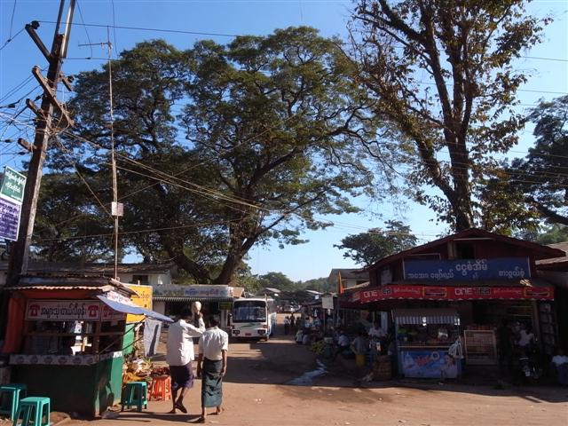
Kinpun
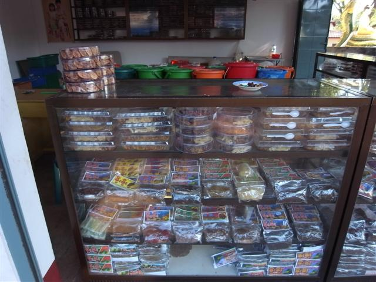
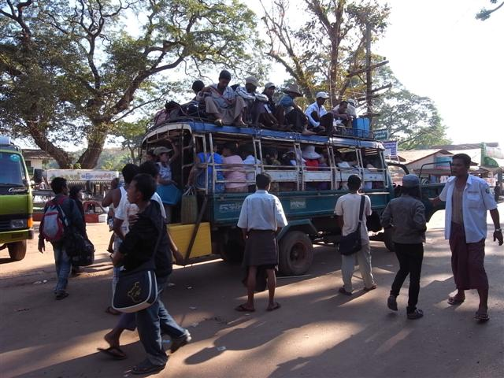
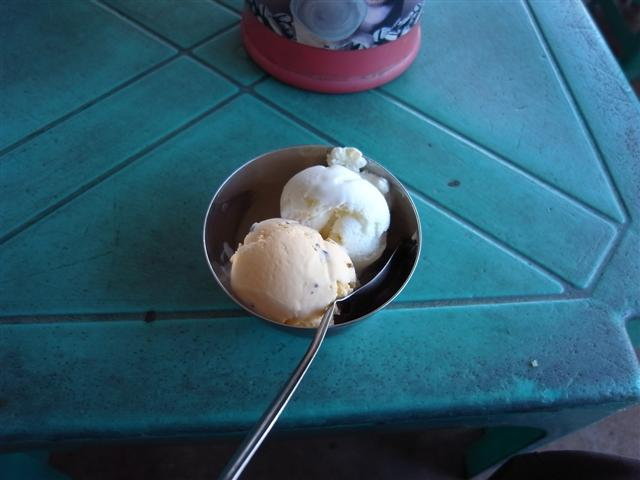
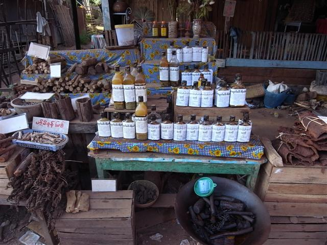
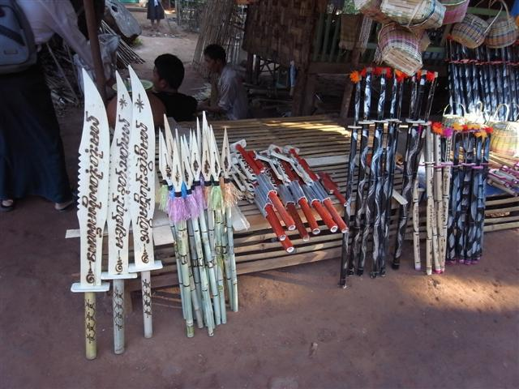
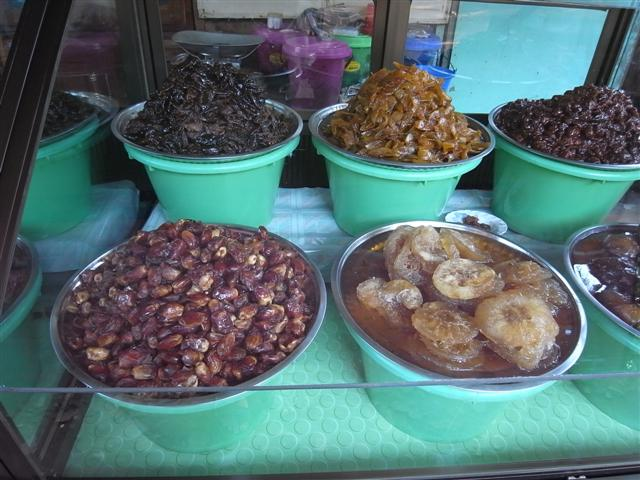
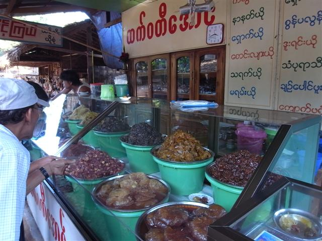
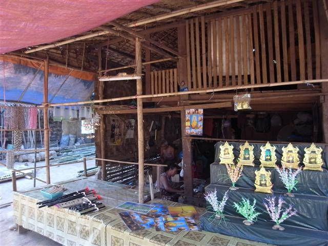
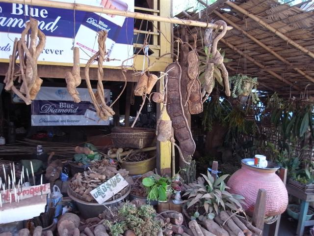
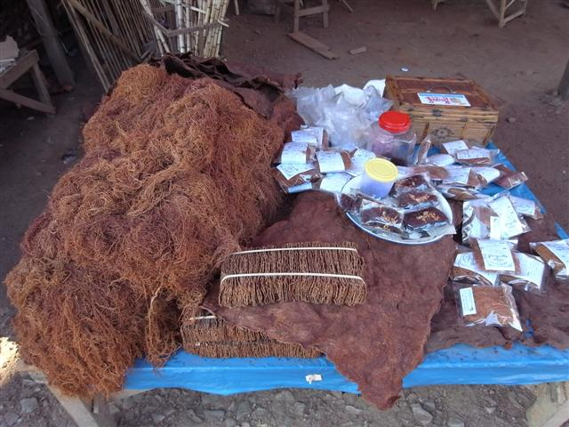
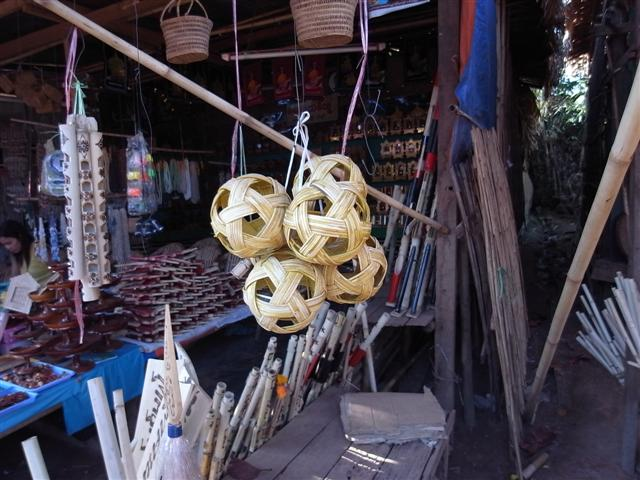
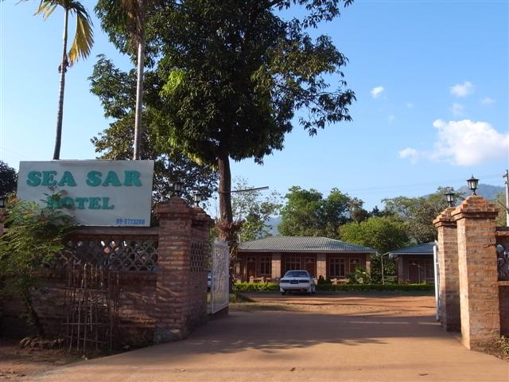
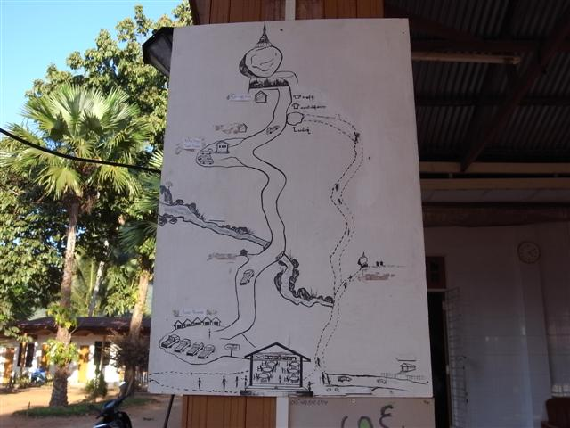
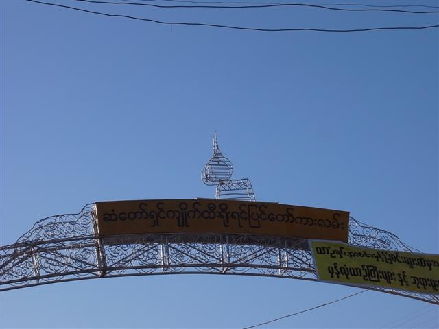
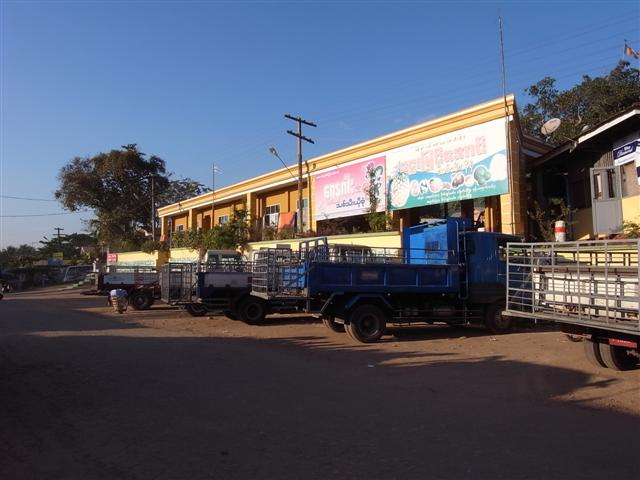
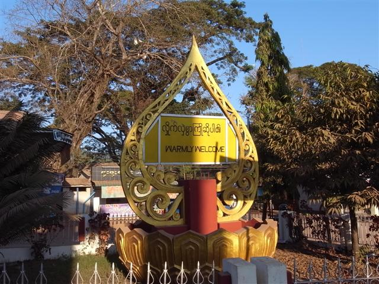
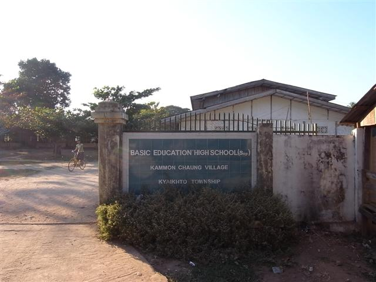
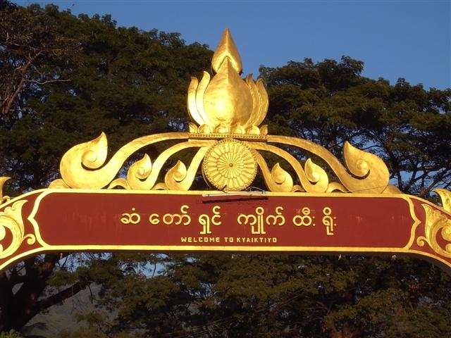
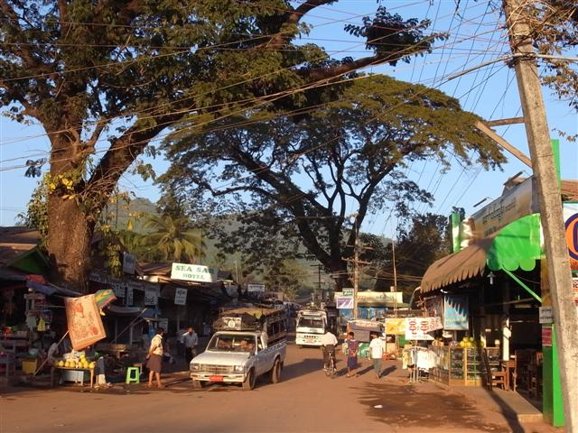